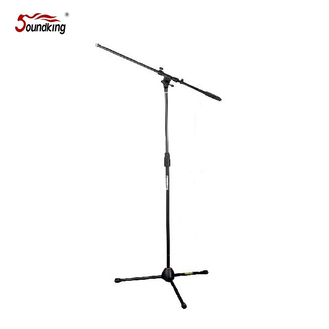

Soundking SD261B는 오토락(Auto Lock) 구조의 붐 마이크 스탠드로, 원하는 높이로 올리기만 하면 자동으로 잠금이 걸리는 직관적인 조작 방식이 특징입니다. 보급형 가격대에서 T-Bar 800 mm와 스틸 본체 구조를 갖춰 보컬 · 연단 · 강의 현장에 적합합니다.

오토락(Auto Lock) 구조의 붐 마이크 스탠드. 원하는 높이로 올리기만 하면 자동 잠금이 걸려, 설치 속도가 빠른 보급형 프로 스탠드입니다.
SD261B는 높이 조절부에 오토락 메커니즘이 적용되어, 별도 노브를 조이지 않아도 원하는 높이에서 자동으로 고정됩니다. 해제 시에는 그립 레버를 가볍게 누르는 것만으로 하강이 가능해, 반복 설치가 잦은 렌탈 · 강의실 · 교회 현장에서 효율이 높습니다.
1000–1600 mm 높이 범위와 800 mm T-Bar 붐으로 일반적인 보컬 수음 · 악기 근접 수음을 모두 커버하며, 2.5 kg의 가벼운 무게는 이동·보관 부담을 줄여 줍니다. Soundking 정품 유통 제품입니다.
| 모델명 | SD261B |
|---|---|
| 타입 | Boom Mic Stand (Auto Lock) |
| Height | 1000 – 1600 mm |
| T-Bar Length | 800 mm |
| Material | Steel |
| Net Weight | 2.5 kg |
| 권장소비자가 | 46,200 원 / 개 (VAT 포함) |
※ 본 사양 · 단가는 수입원(현대에이브이씨) 2026-01-01 스탠드 가격표 기준입니다.